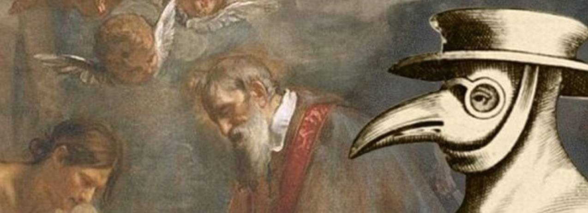

BLACK DEATH
Welcome unknown

Black Death?
"Black Death disebut juga Wabah Hitam, adalah suatu pandemi hebat yang pertama kali melanda Eropa pada pertengahan hingga akhir abad ke-14 (1347 – 1351) dan membunuh sepertiga hingga dua pertiga populasi Eropa. Pada saat yang hampir bersamaan, terjadi pula epidemi pada sebagian besar Asia dan Timur Tengah, yang menunjukkan bahwa peristiwa di Eropa sebenarnya merupakan bagian dari pandemi multiregional. Jika termasuk Timur Tengah, India, dan Tiongkok, Maut Hitam telah merenggut sedikitnya 75 juta nyawa.

Hallo!
Kami kelompok 1 dari kelas 11 2 SMAK SMAK Bogor akan memberikan kalian beberapa informasi tentang Black Death nih, baca semua ya guys dan ambil info sebanyak-banyaknya.
T M I
-
Yersinia pestis
Penemuan bakteri yersinia pestis sendiri terjadi ketika wabah pes mencapai Hong Kong pada 1894. Ahli bakteriologi Jepang Shibasaburo Kitasato berangkat untuk meneliti penyakit itu pada Juni 1894. Di saat bersamaan, Alexandre Yersin dari Institute Pasteur juga berangkat ke Hongkong atas perintah menteri kolonial Prancis. Keduanya menemukan jenis bakteri baru dalam tubuh pasien pes dan organ tikus mati di daerah wabah.